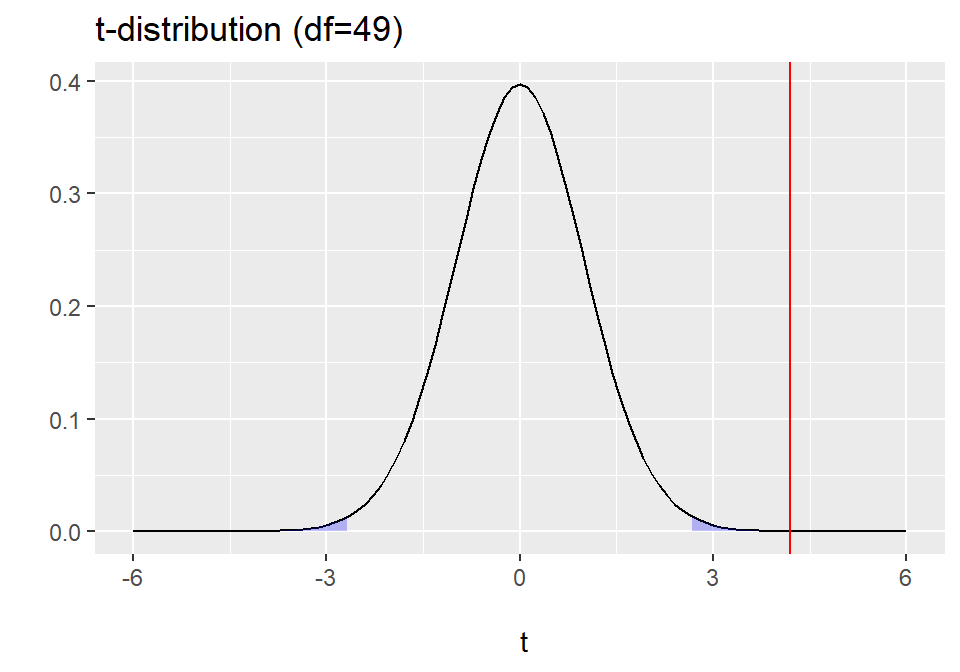

Lecture 18: Paired t-test
Data Analysis for Psychology in R 1
Tom Booth
Today
- Discuss in detail paired sample \(t\)-tests
- When to use
- Tested hypotheses
- Calculation
- Doing in R
- Write up
- Discuss Cohen’s \(D\) as a measure of effect size for mean differences
Learning objectives
- Understand when to use an paired sample \(t\)-test
- Understand the null hypothesis for an paired sample \(t\)-test
- Understand how to calculate the test statistic
- Know how to conduct the test in R
- Know how to calculate Cohen’s \(D\) for each form of \(t\)-test
Purpose & Data
- The paired sample \(t\)-test is used when we want to test the difference in mean scores for a sample measured at two points in time.
- Thus this is a first example of a repeated measures design.
- Data Requirements
- A continuously measured variable.
- A binary variable denoting time.
Example
- I want to assess whether a time-management course helps reduce exam stress in students.
- I ask 50 students to take a self-report stress measure during their winter exams.
- At the beginning of semester 2 they take a time management course.
- I then assess their self-report stress in the summer exam block.
- Let’s assume for the sake of this example that I have been able to control the volume and difficulty of the exams the students take in each block.
Data
# A tibble: 6 x 3
ID stress time
<chr> <dbl> <fct>
1 ID1 14 t1
2 ID2 7 t1
3 ID3 8 t1
4 ID4 8 t1
5 ID5 7 t1
6 ID6 7 t1
Calculating difference
- In the paired \(t\)-test, we specifically calculate and analyse the difference in scores at time 1 and time 2 per participant.
\[
d_i = x_{i1} - x_{i2}
\]
Test statistic
- The resulting test statistic:
\[
t = \frac{\bar{d}}{s_{d} / \sqrt{n}}
\]
- where:
- \(\bar{d}\) = mean of the individual difference scores (\(d_i\))
- \(s_{d}\) = standard deviation of the difference scores (\(d_i\))
- \(n\) = sample size
- The associated sampling distribution is a \(t\)-distributon with \(n-1\) degrees of freedom.
- Note, this is just essentially a one sample test on the difference scores.
Hypotheses
\[
\begin{matrix}
H_0: \mu_{d} = 0 \\
H_1: \mu_{d} \neq 0
\end{matrix}
\]
\[
\begin{matrix}
H_1: \mu_{d} < 0 \\
H_1: \mu_{d} > 0
\end{matrix}
\]
Our Example
- I elect to use a two-tailed test with alpha of .01
- I want to be quite sure the intervention has worked and stress levels have changed.
- So my hypotheses are:
\[
\begin{matrix}
H_0: \mu_{d} = 0 \\
H_1: \mu_{d} \neq 0
\end{matrix}
\]
Calculation
- Steps in my calculations:
- Calculate the difference scores for individuals.
- Calculate the mean of the difference scores.
- Calculate the SD of the difference scores.
- Check I know my N.
- Calculate the standard error of the mean difference.
- Use all this to calculate \(t\)
- Calculate my degrees of freedom
Data organisation
- Our data is currently in what is referred to as long format.
- All the scores are in one column, with two entries per participant.
- To calcuate the \(d_i\) values, we will convert this to wide format.
- Where there are two columns representing the score at time 1 and time 2
- And a single row per person
Data organisation
# A tibble: 6 x 3
ID t1 t2
<chr> <dbl> <dbl>
1 ID1 14 7
2 ID2 7 7
3 ID3 8 9
4 ID4 8 12
5 ID5 7 10
6 ID6 7 9
Calculation
# A tibble: 1 x 5
D SDd N SEd t
<dbl> <dbl> <int> <dbl> <dbl>
1 2.1 3.55 50 0.5 4.2
Is my test significant?
- So we have all the pieces we need:
- \(t\) = 4.2
- \(df\) = \(n-1\) = 49
- Hypothesis to test (two-tailed)
- \(\alpha = 0.01\)
- So now all we need is the critical value from the associated \(t\)-distribution in order to make our decision .
Is my test significant?

In R
Paired t-test
data: exam_wide$t1 and exam_wide$t2
t = 4.1864, df = 49, p-value = 0.0001174
alternative hypothesis: true difference in means is not equal to 0
95 percent confidence interval:
1.091937 3.108063
sample estimates:
mean of the differences
2.1
- Again, slight rounding differences.
Assumptions
- Normality of the difference scores (\(d_i\))
- Independence of observations within group/time
- Data are matched pairs (design)
Write-up
A paired-sample \(t\)-test was conducted in order to determine a if a statistically significant (\(\alpha\) = .01) mean difference in self-report stress was present, pre- and post-time management intervention in a sample of 50 undergraduate students. The pre-intervention mean score was higher (Mean=9.72) than the post intervention score (Mean = 7.62). The difference was statistically significant (\(t\)(49)= 4.19, \(p\) < . 01, two-tailed). Thus, we reject the null hypothesis of no difference.
Effect Size: Cohen’s D
- Cohen’s-\(D\) is the standardized difference in means.
- The basic form of \(D\) is the same across the different \(t\)-tests:
Cohen’s D: Independent t
- Independent-sample t-test:
\[
D = \frac{\bar{x}_1 - \bar{x}_2}{s_p}
\]
- \(\bar{x}_1\) = mean group 1
- \(\bar{x}_2\) = mean group 2
- \(s_p\) = pooled standard deviation
Cohen’s D: Paired t
\[
D = \frac{\bar{d} - 0}{s_{d}}
\]
- \(\bar{d}\) = mean of the difference scores (\(d_i\))
- \(s_{d}\) = standard deviation of the difference scores (\(d_i\))
Interpreting Cohen’s D
- Very crude interpretations of D -scores:
- ~ 0.2 = small effect
- ~ 0.5 = moderate effect
- ~ 0.8 = large effect
Summary: Three different t-tests
|
|
One-sample
|
Independent Sample
|
Paired (Dependent) Sample
|
|
Outcome
|
Continuous Variable
|
Continuous Variable
|
Continuous Variable
|
|
Predictor
|
Single group vs population
|
Categorical: two groups
|
Categorical: two time points
|
|
Sample
|
One sample vs population value
|
Two independent groups
|
One group sampled at two time points
|
|
Measure of difference
|
Observed - known population value
|
Group 1 - Group 2
|
Time 1 - Time 2
|
|
Measure of Variability
|
Standard error of the mean
|
Pooled standard error of difference in means
|
Standard error of the difference in means
|
Tasks for this week…
- Finish tasks from last week.
- Quiz 18: Independent sample \(t\)-tests
- Today at 17:00.
- Close Monday 3rd at 17:00